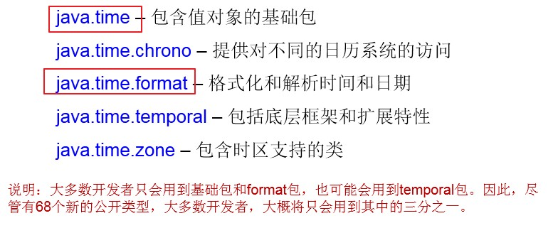
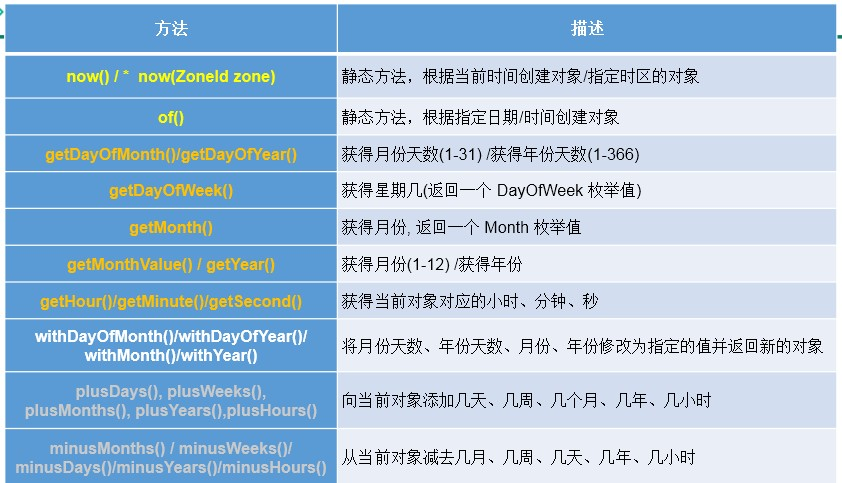
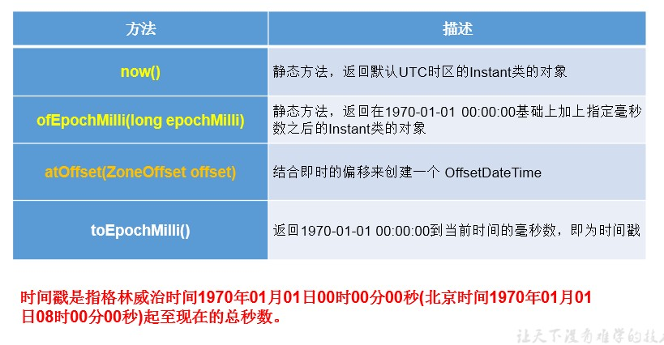
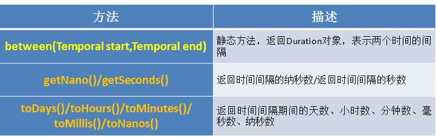
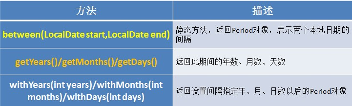

JDK8中新日期时间API
1.日期时间API的迭代：
第一代：jdk 1.0 Date类
第二代：jdk 1.1 Calendar类，一定程度上替换Date类
第三代：jdk 1.8 提出了新的一套API
2.前两代存在的问题举例：
可变性：像日期和时间这样的类应该是不可变的。
偏移性：Date中的年份是从1900开始的，而月份都从0开始。
格式化：格式化只对Date用，Calendar则不行。
此外，它们也不是线程安全的；不能处理闰秒等。
3.java 8 中新的日期时间API涉及到的包

4.本地日期、本地时间、本地日期时间的使用：LocalDate / LocalTime / LocalDateTime
4.1 说明：
① 分别表示使用 ISO-8601日历系统的日期、时间、日期和时间。它们提供了简单的本地日期或时间，并不包含当前的时间信息，也不包含与时区相关的信息。
② LocalDateTime相较于LocalDate、LocalTime，使用频率要高
③ 类似于Calendar
4.2 常用方法：

5.时间点：Instant
5.1 说明：
① 时间线上的一个瞬时点。 概念上讲，它只是简单的表示自1970年1月1日0时0分0秒（UTC开始的秒数。）
② 类似于 java.util.Date类
5.2 常用方法：

6.日期时间格式化类：DateTimeFormatter
6.1 说明：
① 格式化或解析日期、时间
② 类似于SimpleDateFormat
6.2 常用方法：
① 实例化方式：
// 重点：自定义的格式。如：ofPattern(“yyyy-MM-dd hh:mm:ss”)
DateTimeFormatter formatter3 = DateTimeFormatter.ofPattern("yyyy-MM-dd hh:mm:ss");
//格式化
String str4 = formatter3.format(LocalDateTime.now());
System.out.println(str4);//2019-02-18 03:52:09
//解析
TemporalAccessor accessor = formatter3.parse("2019-02-18 03:52:09");
System.out.println(accessor);
7.其它API的使用 （不讲）
7.1 带时区的日期时间：ZonedDateTime / ZoneId
举例：
// ZoneId:类中包含了所的时区信息
@Test
public void test1(){
//getAvailableZoneIds():获取所的ZoneId
Set<String> zoneIds = ZoneId.getAvailableZoneIds();
for(String s : zoneIds){
System.out.println(s);
}
System.out.println();
//获取“Asia/Tokyo”时区对应的时间
LocalDateTime localDateTime = LocalDateTime.now(ZoneId.of("Asia/Tokyo"));
System.out.println(localDateTime);
}
//ZonedDateTime:带时区的日期时间
@Test
public void test2(){
//now():获取本时区的ZonedDateTime对象
ZonedDateTime zonedDateTime = ZonedDateTime.now();
System.out.println(zonedDateTime);
//now(ZoneId id):获取指定时区的ZonedDateTime对象
ZonedDateTime zonedDateTime1 = ZonedDateTime.now(ZoneId.of("Asia/Tokyo"));
System.out.println(zonedDateTime1);
}
7.2 时间间隔：Duration--用于计算两个“时间”间隔，以秒和纳秒为基准

举例：
@Test
public void test3(){
LocalTime localTime = LocalTime.now();
LocalTime localTime1 = LocalTime.of(15, 23, 32);
//between():静态方法，返回Duration对象，表示两个时间的间隔
Duration duration = Duration.between(localTime1, localTime);
System.out.println(duration);
System.out.println(duration.getSeconds());
System.out.println(duration.getNano());
LocalDateTime localDateTime = LocalDateTime.of(2016, 6, 12, 15, 23, 32);
LocalDateTime localDateTime1 = LocalDateTime.of(2017, 6, 12, 15, 23, 32);
Duration duration1 = Duration.between(localDateTime1, localDateTime);
System.out.println(duration1.toDays());
}
7.3 日期间隔：Period --用于计算两个“日期”间隔，以年、月、日衡量

举例：
@Test
public void test4(){
LocalDate localDate = LocalDate.now();
LocalDate localDate1 = LocalDate.of(2028, 3, 18);
Period period = Period.between(localDate, localDate1);
System.out.println(period);
System.out.println(period.getYears());
System.out.println(period.getMonths());
System.out.println(period.getDays());
Period period1 = period.withYears(2);
System.out.println(period1);
}
7.4 日期时间校正器：TemporalAdjuster
举例：
@Test
public void test5(){
//获取当前日期的下一个周日是哪天？
TemporalAdjuster temporalAdjuster = TemporalAdjusters.next(DayOfWeek.SUNDAY);
LocalDateTime localDateTime = LocalDateTime.now().with(temporalAdjuster);
System.out.println(localDateTime);
//获取下一个工作日是哪天？
LocalDate localDate = LocalDate.now().with(new TemporalAdjuster(){
@Override
public Temporal adjustInto(Temporal temporal) {
LocalDate date = (LocalDate)temporal;
if(date.getDayOfWeek().equals(DayOfWeek.FRIDAY)){
return date.plusDays(3);
}else if(date.getDayOfWeek().equals(DayOfWeek.SATURDAY)){
return date.plusDays(2);
}else{
return date.plusDays(1);
}
}
});
System.out.println("下一个工作日是：" + localDate);
}